Confidential | For Training Purposes Only
Lab 3 - Build the Fabric#
Lab Overview#
Lab time: 20 minutes
In this lab, we are going to use the Aruba Fabric Composer (AFC) to:
Discover the CX10000 switches
Create a new fabric
Assign the newly discovered switches to the fabric
Configure NTP, DNS
Create a VSX Cluster
Lab 3.1 - Discover the Switches#
Description#
Using the AFC we will discover the already deployed CX10000 switches.
Using the Guided Setup menu on the right side, click on the SWITCHES button in order to discover the new switches. If the right-hand menu is missing, click on the icon to the left of the person icon. This toggles the workflow menu.
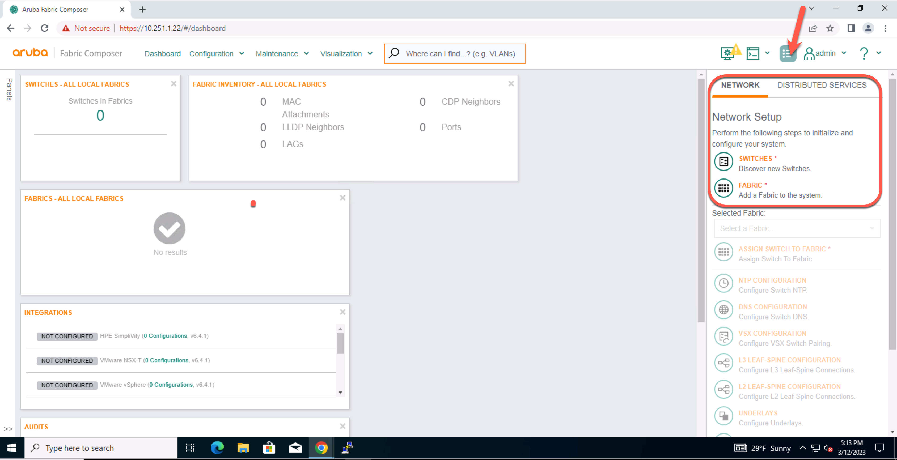
Fig. Lab 3 Discover Switches
To import the CX 10000 Switches, enter the following parameters in the form:
Switches |
|
Switch “admin” account password |
|
Service Account User |
|
Service Account Password |
|
Click APPLY |
Note
The Service Account User will be created on each switch, and will be used for API access.
Expected Results#
The Switches should be discovered as shown in the following screenshot. The Health Status should show HEALTHY, BUT or UNKNOWN. This means that the switches have been discovered, but are not yet assigned to a fabric.
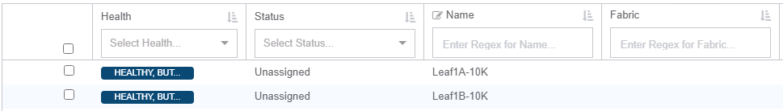
Fig. Lab 3 Discovered Switches
Lab 3.2 - Create a Fabric#
Description#
In this step, we will create a Fabric. In the AFC, a fabric is the group of devices with their corresponding configuration and state, including switches, and integrated platforms (vSphere, PSM, etc.).
Validate#
On the Guided Step menu on the right side, select the FABRIC button.
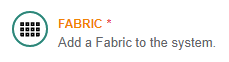
Fig. Lab 3 Create Fabric
Create a new fabric using the following parameters:
Name |
dsf |
Description |
Distributed Services Fabric |
Type |
Data |
Time Zone |
America/New_York |
Auto Save Interval |
600 |
Click APPLY to create the Fabric |
Expected Results#
Verify that the Fabric state is HEALTHY and looks similar to the following screenshot.
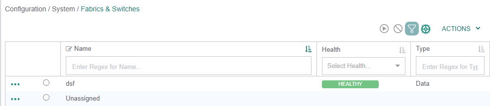
Fig. Lab 3 Healthy Fabric
Lab 3.3 - Assign Switches to a Fabric#
Description#
Once a Switch is discovered, you can use the Assign Switch wizard to assign a role to the switch (Leaf, Spine, Border Leaf, etc) and also assign the Switch to a Fabric. We will use this step to assign the switches to the newly created Fabric.
Validate#
On the Guided Setup menu click on ASSIGN SWITCH TO FABRIC
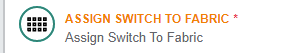
Fig. Lab 3 Assign Switch
Select the Fabric, the Switches and the Role Leaf as in this table:
Fabric |
dsf |
Switches |
LGxx-Leaf01-A - LGxx-Leaf01-B |
Role |
Leaf |
Force LLDP Discovery |
Yes (select) |
Initialize Ports |
Yes (Select) |
Scroll down, click ADD and APPLY |
Expected Results#
After a short moment, the switches should appear as HEALTHY and the status should be Synced, as in the following screenshot:
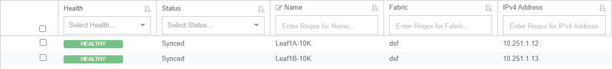
Fig. Lab 3 Healthy Switches
If the Switch status does not change after a few moments, refresh the page in the RDP session.
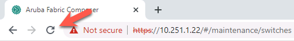
Fig. Lab 3 Refresh Browser
Note
If the workflow wizard has disappeared on the right-hand side of the screen. Click the icon shown below in the top right corner and you will see the workflows reappear.
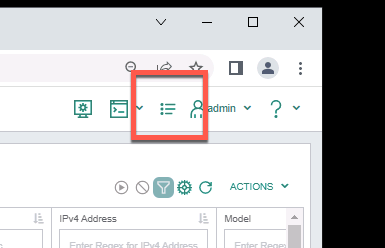
Fig. Lab 3 Workflow Wizard
Lab 3.4 - Configure NTP#
Description#
As in any organization or infrastructure, accurate time is crucial! In this step, we will make sure that the Switches are configured to sync their time with a valid NTP server.
Validate#
On the Guided Setup menu click on NTP Configuration
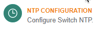
Fig. Lab 3 Configure NTP
Step 1 - Name |
|
Name |
dsf-ntp |
Description |
Time Server |
Click NEXT |
Step 2 - Entries |
|
Server |
10.250.2LG.9 (LG is your labgroup number) |
Scroll down, click ADD and NEXT |
Step 3 - Application |
|
Fabric |
dsf |
Switches |
Leave empty (they are already assigned to the dsf Fabric) |
Click NEXT |
Step 4 - Summary |
|
Review the summary and then Click APPLY |
Expected Results#
The Lab NTP server should be assigned to the Fabric and Switches.
Lab 3.5 - Configure DNS#
Description#
DNS is equally as crucial for running infrastructure. This step will assign a DNS server to the Fabric and Switches.
Validate#
In the Guided Setup menu click on DNS Configuration
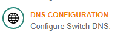
Fig. Lab 3 Configure DNS
Step 1 - Name |
|
Name |
dsf-dns |
Description |
Name Server |
Click NEXT |
Step 2 - Settings |
|
Domain Name |
dsf.lab.local |
Name Server |
10.250.2LG.9 - hit Enter after typing the IP Address (LG is your labgroup number) |
Click NEXT |
Step 3 - Application |
|
Fabric |
dsf |
Click NEXT |
Step 4 - Summary |
|
Review the summary and then Click APPLY |
Expected Results#
The Lab DNS server should be assigned to the Fabric and Switches.
Lab 3.6 - Create a VSX Cluster#
Description#
Virtual Switching Extension (VSX) is virtualization technology for switches running the AOS-CX operating system. This solution lets the switches present as one virtualized switch in critical areas. Configuration synchronization is an aspect of the VSX solution where the primary switch configuration is synchronized with the secondary switch.
In this step, we will create a VSX cluster with both CX 10000 Switches.
Validate#
In the Guided Setup menu click on VSX Configuration
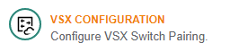
Fig. Lab 3 VSX Configuration
Step 1 - Create Mode |
|
Automatically generate VSX pairs |
(Select) |
Click NEXT |
Step 2 - Name |
|
Name Prefix |
dsf |
Description |
Leaf-LG VSX |
Click NEXT |
Step 3 - Inter-Switch Link Settings |
|
Keep all the default values |
|
Click NEXT |
Step 4 - Keep Alive Interfaces |
||
Interface Mode |
Point-to-Point |
|
IPv4 Address Resource Pool |
Pull DOWN on the right hand arrow and select the pre-defined IPv4 pool |
|
|
||
Click NEXT |
Step 5 - Keep Alive Settings |
|
Keep all the default values |
|
Click NEXT |
Step 6 - Options |
||
Linkup Delay Timer |
(keep the default value) |
|
MAC Address Resource Pool |
Pull DOWN on the right hand arrow and select the pre-defined MAC address pool |
|
|
||
Click NEXT |
Step 4 - Summary |
|
Review the summary and then Click APPLY |
Expected Results#
The VSX cluster consisting of the two CX 10000 should be successfully created and should also be up and healthy. Refresh browswer, if necessary.
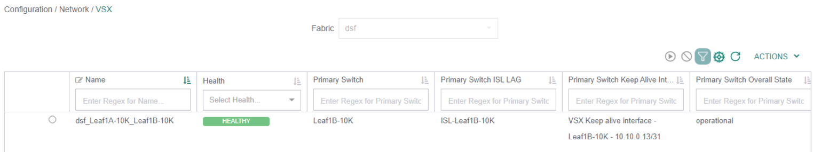
Fig. Lab 3 VSX Health
Lab 3 Summary#
Using the Aruba Fabric Composer, we discovered two CX 10000 Switches
We created a new Fabric and assigned the two Switches to that fabric
We configured the basic network services (DNS and NTP) and assigned these profiles to the switches
We built a VSX cluster of the two switches
Lab 3 Learning Check#
AFC uses Network Resource pools for IP and MAC addresses
Switches must be assigned to a fabric
VSX workflow makes configuration simple
DNS & NTP are configured and assigned to a fabric